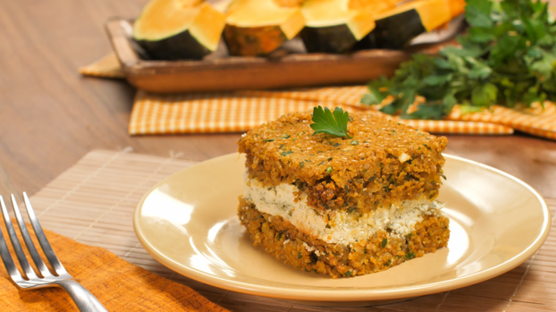
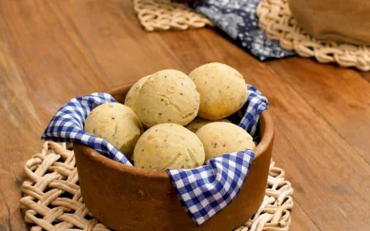
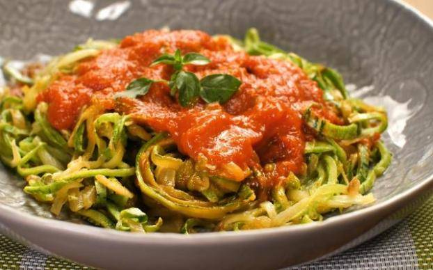
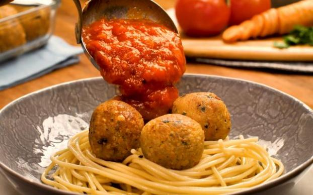
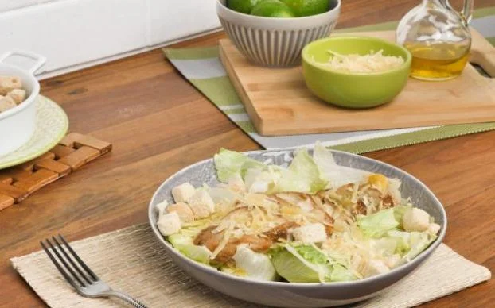
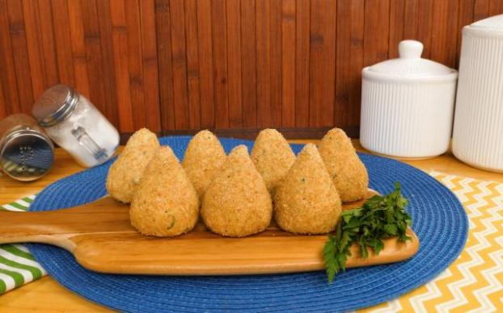

Strogonoff de batata-doce
Essa receita deliciosa leva iogurte natural no lugar do creme de leite.
Confira como preparar o strogonoff fit com batata-doce.
Omelete Rápido
Essa receita é perfeita pra você que não tem muito tempo pro café da manhã:
faça um omelete simples e rápido, em apenas 4 minutos!
Quibe de Abobora

Farinha para quibe e abóbora paulista ou japonesa ão os pilares dessa receita incrível.
Pão de Queijo de Inhame

Para os amantes do pão de queijo, essa é um combinação que você precisa conhecer!
Espaguete de Abobrinha

Uma ótima opção de espaguete de abobrinha os amantes da massa que querem provar um prato diferente!
Almondega de Grão-de-Bico

Essa almondega é perfeita para acompanhar um macarrão ou, por que não, um espaguete de abobrinha.
Crepioca
Essa receita leva apenas ovo e goma de tapioca. Mais prática, impossível!
Confira como preparar uma deliciosa receita de crepioca!
Salada verde com frango

Um prato simples, saudável e com muito sabor! Confira como preparar
uma deliciosa salada verde com frango!
Salada de quinoa
Coxinha low carb
